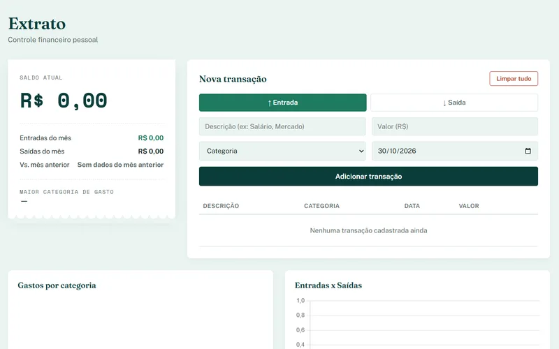
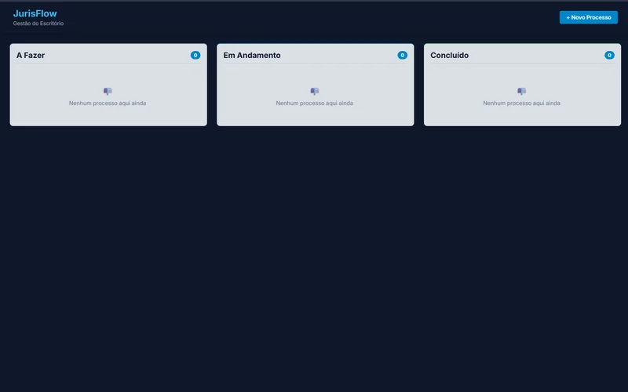
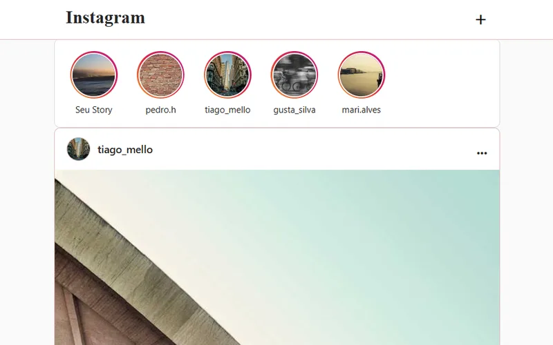
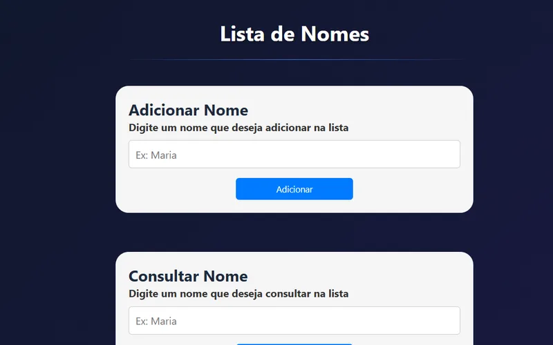

Extrato Financeiro
Aplicação para controle de finanças pessoais com gráficos e armazenamento local.
Buscando minha primeira experiência: estágio ou vaga júnior
Estudante do 4º período de Análise e Desenvolvimento de Sistemas e desenvolvedor front-end em busca da primeira experiência na área. Crio interfaces web com HTML, CSS e JavaScript, com atenção à experiência de quem usa e ao código organizado.

Cursando o 4º período do tecnólogo em Análise e Desenvolvimento de Sistemas na Universidade Candido Mendes (UCAM). Já fiz cursos de HTML5, CSS3 e JavaScript e hoje faço um curso Full Stack focado em JavaScript, que complementa minha base em front-end.
Estou em busca da minha primeira experiência profissional na área, como estagiário ou desenvolvedor júnior. Enquanto isso, monto projetos pessoais para praticar o que aprendo e quero crescer em um time, evoluindo em front-end.

Aplicação para controle de finanças pessoais com gráficos e armazenamento local.

Sistema de gestão visual de processos jurídicos (Kanban) com persistência local e validação de formulários.

Projeto em JavaScript puro, focado em manipulação do DOM, estilização e experiência do usuário.

Aplicação web para cadastro e listagem em tempo real, usando localStorage para guardar os dados.
Aberto a conversas sobre estágio, vaga júnior e projetos.